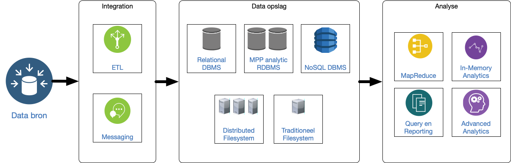
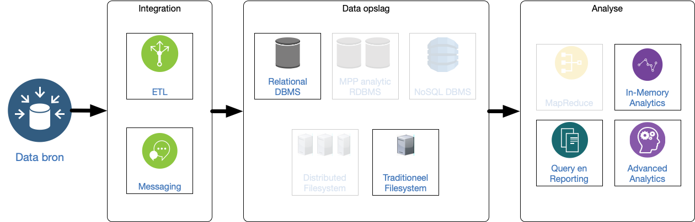
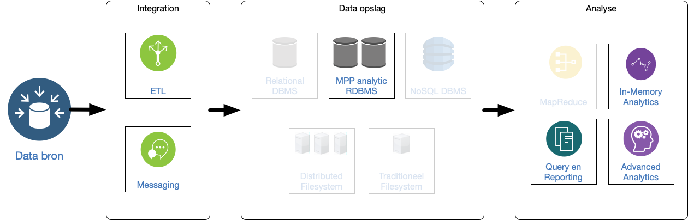
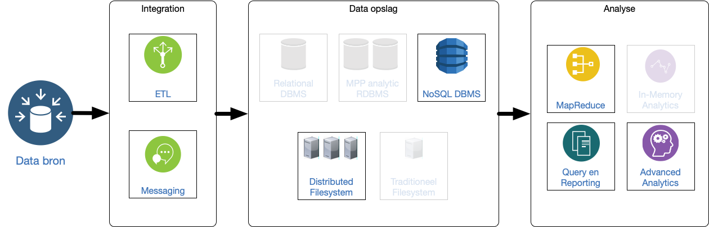
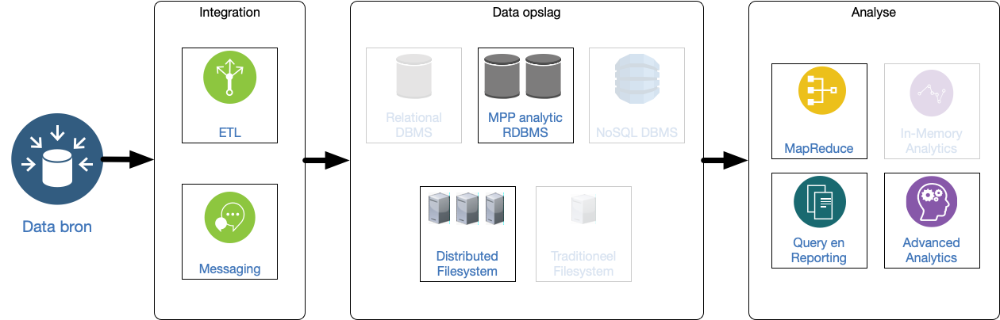
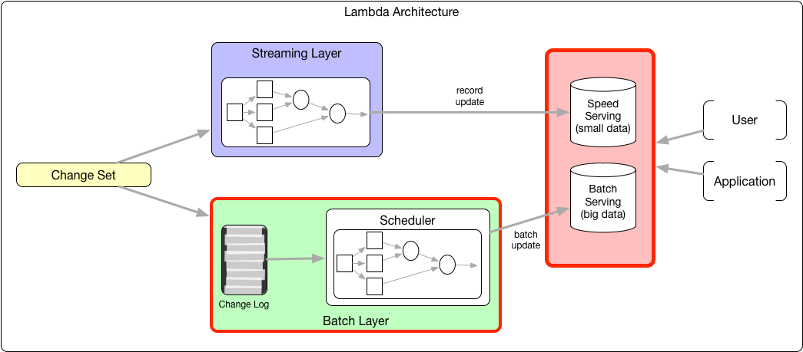
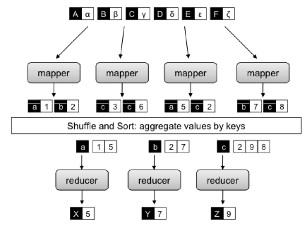
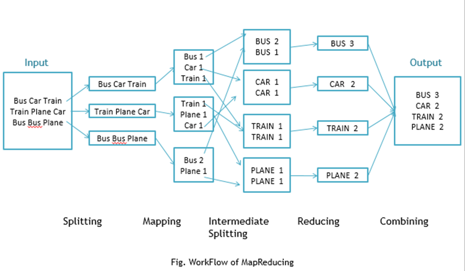
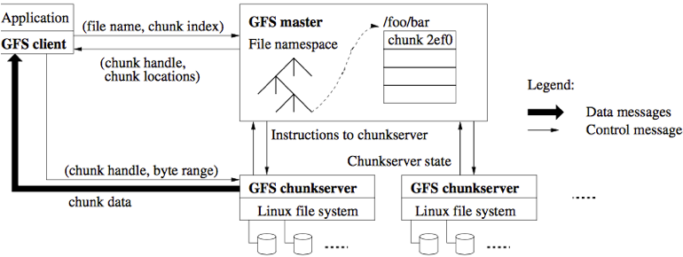

Big Data System Design: Data analyse
Roelant Ossewaarde / HU
Dag 4, 18 februari 2019
1 Referentiestructuren

ETL: Extract Transform Load.
MPP: Massively Parallel Processing: problemen waar verschillende CPU's tegelijk aan kunnen werken.
1.1 Pure Relational

Bekende technologie. De ETL en messaging vindt plaats in het RDBMS. Als er een voorbewerking van de data plaats vindt buiten het database-systeem (bijvoorbeeld door scripts), kies dan voor data refinery architectuur.
1.2 Extended Relational

Vooral geschikt voor CPU-intensieve problemen ("Massively Parallel Processing") waarbij het volume data minder ver opschaalt.
Variatie in vorm van queries mogelijk (snel antwoord), maar botteleneck: geen on-disk persistentie.
1.3 Pure Non-relational

Vooral geschikt als de vorm van queries al vaststaat en het schaalprobleem vooral het volume van de data betreft.
1.4 Data refinery

Voorbewerking vindt plaats buiten relationele database. Dat maakt in-memory relationele database mogelijk.
Real-time analyse is beperkt (want er is een voorbewerking), volume is beperkt tot geheugengrenzen, maar wel grote varieteit aan data mogelijk doordat er een uitgebreide voorbewerking mogelijk is.
1.5 Lambda architecture

Kan alles, schaalt ongelimiteerd. Maar duur in onderhoud, want verschillende databases/codebases/etc.
1.6 Kappa architecture

1.7 Overwegingen voor de opdracht:
Er is sprake van Query en reporting (use cases die teksten opvragen) en van advanced analytics (use cases met text mining).
Het volume/varieteit van data eist niet een in-memory database. (geen MPP analytic RDBMS)
De data bestaat uit documenten en blobs. (wel NoSQL)
Er zijn een batch-layer en speed-layer, namelijk: textmining in de batch-layer; queries aan de speed layer.
Gezien het volume van de data, lijkt de lambda-architectuur overkill: een enkel DBMS zal voldoende krachtig zijn om zowel de batch- als de speed-layer te ondersteunen.
Dus: NoSQL geschikt voor documenten in een pure non-relational-architectuur of in een kappa-architectuur.
Keuze: als er de noodzaak is om regelmatig de hele dataset opnieuw te indexeren, dan is de kappa-architectuur het meest geschikt.
2 Map-reduce
Multi-core computers kunnen efficiënt processen in parallel afwerken. Ze moeten dan wel op de juiste manier aangestuurd worden. Eén van de toepassingen is data-intensive scalabale computing (DISC): het verwerken van grote datasets. Google ontwikkelde een belangrijk algoritme: MapReduce. Yahoo ontwikkelde een architectuur (Hadoop) waarin MapReduce efficiënt geïmplementeerd kan worden.
2.1 Architectuur van een MapReduce implementatie

2.2 Workflow voorbeeld van Word Count

(bron: https://dzone.com/articles/word-count-hello-word-program-in-mapreduce)
2.3 Voorbeeld-run van een word count mapper
Zie https://github.com/roelanto/tcifbigdata voor een voorbeeldimplementatie met werkende code.
Mapper: emit een 1 voor ieder woord dat gevonden wordt.
class WordCountMapper extends Mapper<LongWritable, Text, Text, IntWritable> { public void map(LongWritable Key, Text value, Context context) throws IOException, InterruptedException { String[] tokens = value.toString().split("\\s"); for (String s : tokens) { context.write(new Text(s), new IntWritable(1)); } } }
2.4 Voorbeeld-run van een word count reducer
Reducer: emit de som van alle gevonden '1'-en.
class WordCountReducer extends Reducer<Text, IntWritable, Text, IntWritable> { public void reduce(Text key, Iterable<IntWritable> values, Context context) throws IOException, InterruptedException { int sum = 0; for (IntWritable i : values) { sum += i.get(); } context.write(key, new IntWritable(sum)); } }
2.5 HDFS
Traditioneel: storage is een aparte component in het systeem, gescheiden van compute; tegenwoordig wordt storage vaak geïmplementeerd als bijvoorbeeld Netword Attached Storage (NAS) of Storage Area Networks (SAN). Dataverwerking volgt in zulke systemen steeds dezelfde stappen: haal input data uit store; plaats data in geheugen; verwerk data; schrijf data weg.
Bij groei van storage moet ook compute groeien; en dus ook de verbinding tussen die twee. Probleem is dat de kosten van verbindingen niet-lineair stijgen: 10 x zo veel bandbreedte is meer dan 10 x zo duur. Bovendien zijn eisen aan opslag tegewoordig anders dan de eisen waarmee traditionele filesystems zijn geb
De oplossing die Google bedacht: het Google File System (GFS). Het motto is om storage en compute niet meer te scheiden, zoals in de Von Neumann architectuur: ``breng compute naar data, niet andersom''. Hadoop Distributed File System is een open source implementatie van GFS.
2.5.1 Andere architectuur, ander filesysteem
Zo'n modernere architectuur stelt ook andere eisen aan de organisatie van de opslag. Design principes van traditionele filesystemen vs. GFS:
| traditioneel | GFS | |
|---|---|---|
| component failures zijn | excepties | de norm |
| geoptimaliseerd voor | files < 100 Mb | files > 100 Mb |
| datamutatie en lezen vooral | random | sequential |
| # clients | minder | veel |
| belangrijk qua snelheid | latency | bandbreedte |
2.5.2 Bewerkingen via HDFS
